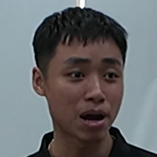

Tối ưu dòng chảy công việc
Đổi quy trình → đổi kết quả. Cùng một sức bỏ ra, output khác hẳn.
Dùng AI để thiết kế lại dòng chảy công việc: mô hình Input → Process → Output → Outcome, roadmap tối ưu 1 công việc, tự động hóa một phần, thư viện prompt copy-được, và 7 case thực chiến.
Đừng làm nhanh hơn — thiết kế lại quy trình.
Muốn tăng hiệu suất, đừng cố làm nhanh hơn ở quy trình cũ. Cùng một Input, đổi Process sẽ ra Output khác chất lượng.
Đặt mục tiêu ngay từ đầu
Ghi vào đầu: "50% công việc lặp lại sẽ giao cho AI." Định nghĩa hiệu suất gấp đôi — thời gian giảm nửa, hoặc cùng thời gian mà khối lượng tăng.
Chọn đúng việc để tối ưu
Ưu tiên việc lặp đi lặp lại và tốn thời gian nhất. Chọn 3 việc lặp → chọn 1 việc nặng nhất → tối ưu để cắt 50%.
"Mình không còn là người làm việc trong hệ thống nữa — mà bắt đầu là người kaizen hệ thống."
Input → Process → Output → Outcome
Phân biệt then chốt: Output là thứ mình tạo ra; Outcome là kết quả thật sự nhận về. Tối ưu phải nhắm Outcome.
Đầu vào
Nguyên liệu + công sức bạn bỏ vào.
Quy trình
Các bước biến đầu vào thành đầu ra.
Thứ tạo ra
Ví dụ: 100 tin nhắn chào gửi đi.
Thứ thật sự muốn
Ví dụ: ~10 khách phản hồi (tỷ lệ ~10%).
Ví dụ "ghi chép": giấy bút → note app → ghi âm + AI bóc tách, lưu Notion phân loại. Cùng một Input, cấp 3 cho Output tái dùng vĩnh viễn — và giải phóng luôn việc ghi chép.
6 bước tối ưu một công việc với AI
Khởi động
Hỏi AI "bạn là ai, biết gì về tôi, giúp được gì". Kích hoạt bối cảnh cố vấn.
Mô tả Input – Output – kỳ vọng 50/50
Nói hết ý tưởng: đầu vào đang có, đầu ra muốn, target, và "tôi làm 50% – AI làm 50%".
Bắt AI tóm tắt TRƯỚC khi làm
"Khoan, đừng nhảy vào thực thi — hãy ở chế độ planning, viết lại xem bạn hiểu gì về yêu cầu."
Bóc tách quy trình → phân vai
Bắt AI vẽ từng bước, rồi chỉ rõ bước nào người làm, bước nào AI làm.
Khoanh vùng + deadline
Gom phạm vi lại (vd "3 ngày cho giai đoạn 1"), tránh để AI mở rộng vấn đề vô tận.
Chạy Version 1 → tinh chỉnh
Ra bản chạy được (dù sai/tốn một tí), rồi kaizen dần. Đừng chờ hoàn hảo.
Một phần A→B→C, không ép A→Z
"Đừng tự động hóa toàn phần — sẽ đau đầu." Chia dòng chảy thành khúc, phân định người/AI theo từng khúc.
Phân vai người / AI
"Công việc của tôi có 10 bước — đâu là bước tôi làm, đâu là bước bạn làm?" Vd pipeline content: người = ghi âm/coaching; AI = tổng hợp, bóc tách, gợi ý, lưu Notion.
Kiến trúc 3 tầng
Cổng giao tiếp (Telegram/ChatGPT) → Bộ não (GPT/Gemini/Claude, thay được) → Bộ nhớ (Notion/Drive/Obsidian).
Copy & dán vào AI
Bộ prompt từ ca thị phạm thật (tối ưu quy trình "chào khách"). Thay [phần trong ngoặc] bằng việc của bạn.
Tôi đang có một công việc lặp lại: [mô tả quy trình từng bước hiện tại]. Đầu ra tôi muốn là [target cụ thể]. Bạn hãy hóa thân thành một chuyên gia xây hệ thống & tự động hóa, đưa cho tôi một kịch bản rõ ràng, ứng dụng được ngay, có công cụ/phần mềm thực tế.
Viết lại cho tôi một workflow phân công: tôi làm gì để chiếm 50% thời gian, AI làm 50% còn lại. Khoan, đừng nhảy vào thực thi — hãy ở chế độ planning, brainstorm lại, và viết lại cho tôi xem bạn đã hiểu gì về yêu cầu này.
Hãy đưa cho tôi app nào nên dùng, chi phí bao nhiêu, mất bao lâu setup, có cần code không. Lưu ý tôi là người NO-CODE — hướng dẫn từng bước. Và đã có ai làm tương tự thành công chưa?
Tôi muốn phản biện: tôi không nghĩ điểm nghẽn lớn nhất là [việc A số lượng], mà là [chất lượng đầu vào B]. Hãy thiết kế lại quy trình tập trung vào điểm nghẽn thật này.
1. Căn cứ vào đâu mà bạn kết luận như vậy? Có kiểm chứng nguồn chưa? 2. Nếu bạn là top chuyên gia thế giới về [lĩnh vực], hãy phản biện lại kết quả này. 3. Nếu bỏ bước [A] mà vẫn đạt [kết quả], thì có cách nào khác không? 4. Tôi chỉ muốn làm 50%. Phần còn lại bạn nghĩ tiếp và đề xuất.
7 dòng chảy được cắt gọt — con số thật
Kết quả từ một Demo Day: mỗi người tự tối ưu một quy trình của chính mình bằng AI.
"Giới hạn lớn nhất khiến mình không làm là do mình tự nghĩ ra thôi."
Cảm nhận sau một ngày thiết kế lại dòng chảy
Vòng chia sẻ cuối buổi workshop 14/07/2026 — lớp 27 học viên (BKE & các cộng đồng bạn). Trích nguyên văn, rút gọn.
Mình từng rất sợ AI — cảm giác lệ thuộc, nó đưa ra một tràng mình không kiểm chứng được, nên mình từ chối, không dùng. Bài học hôm nay là làm sao cho AI hiểu được mình — hóa ra trước giờ mình chưa từng cung cấp cho bạn ấy những thông tin bạn ấy cần để trả lời sát với mình.
Đề bài em trăn trở cả tháng vừa rồi — trong một ngày hôm nay đã giải xong, ra được quy trình.
Bình thường em viết một bài mất hơn 2 tiếng, tuần ra 3 bài. Với quy trình mới, một bài chỉ khoảng 30 phút — vì lâu nhất là nghĩ "viết gì", giờ chỉ việc tập trung viết.
Trước em dùng AI sai cách — nó làm em bị brain rot, lâu rồi mình không nghĩ gì cả. Muốn nói ra được với AI thì trong đầu phải có dòng suy nghĩ — dùng voice bắt mình suy nghĩ nhiều hơn.

Học viên K5 · truyền thôngTừ khóa của mình sáng nay: hãy tự nói ra. Nói dù lời không chuẩn chỉnh — mà AI đúc kết ra đúng từ khóa của mình, những từ mình không nghĩ ra. WOW thật sự.
Trước mình hay lưu prompt của các thầy trên mạng — lưu vào cả một kho mà không bao giờ dùng, vì không hiểu cấu trúc. Hôm nay có khung "tôi đang — tôi muốn — tôi cần bạn" là mình làm chủ công cụ này.
Em từng tham gia rất nhiều buổi về AI — toàn thứ cao siêu, học xong buổi nào cũng mịt mù. Hôm nay biết một cách tiếp cận mới: tái tạo bộ não của mình để giao tiếp với AI.
"Khi nói chuyện với cố vấn AI, bạn ấy cho mình cái key rất quan trọng: sự nghiệp và gia đình sẽ trở thành một — chứ không phải hai con đường đi lệch nhau. Đó là món quà lớn nhất mình nhận được từ khóa học."
Sai lầm thường gặp
- Ép tự động hóa toàn phần A→Z ngay từ đầu.
- Nhảy vào thực thi ngay, bỏ qua bước planning / làm rõ.
- Tin AI 100%, không phản biện → bị dắt mũi (AI bịa nguồn, bịa link, nịnh).
- Không định nghĩa rõ Output/Outcome → để AI "vẽ linh tinh".
- Nhầm Output với Outcome (đếm số lượng mà quên chất lượng/kết quả thật).
- Sợ kỹ thuật, tự nhủ "cái này khó lắm" → trì hoãn; deadline lớn không chia nhỏ.
- Nhồi cả kho dữ liệu bẩn cho AI đọc (thuộc 100 cuốn thay vì 5 cuốn tinh hoa).
- Chỉ "tham khảo" AI rồi vẫn tự làm thủ công.
"Version 1 nó chạy được — kể cả nó sai. Quan trọng nhất là mình đã test được hệ thống đã chạy."